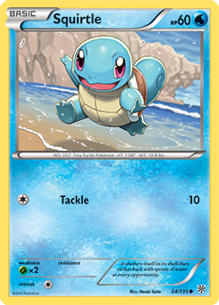

The Pokémon Trading Card Game is a two player game for all ages. Each player builds a Deck of sixty (60) cards using a combination of various Pokémon cards (the main type of cards used to battle), Trainer cards (cards with special effects), and Energy cards (cards that are required to perform most Attacks). New cards and decks are constantly being released, and players may purchase Booster packs to integrate these cards into their own decks or purchase pre-made Trainer kits or Theme Decks that already have all the cards needed to play.
The Pokémon Trading Card Game officially requires a deck of 60 cards for Standard or Expanded play, though shorter Matches can be held with Half Decks consisting of 30 cards instead. During a 60 card match, only four of any one card, excluding Basic Energy cards, are allowed in each deck. This is further limited to two of any one card in a Half Deck match. Many fans have also created their own game rules and playing methods and have websites devoted to providing alternative playing methods. These rules and methods are not allowed in Play! Pokémon competitions.